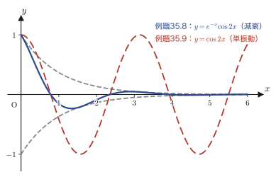

第35章2階線形同次微分方程式の基礎
前章までで，1階の微分方程式は，変数分離形・同次形・1階線形微分方程式・完全微分方程式など，いくつかの型に分類して解く手順を学んできた．1階の微分方程式の一般解には，積分定数がちょうど1つだけ現れた．たとえば1階線形同次微分方程式 $y'+P(x)y=0$ の一般解は $y=Ce^{-\int P(x)\dd x}$ のように，任意定数 $C$ が1つだけ入っている（第33章）．
ところが，バネにつながれたおもりの運動，電気回路を流れる電流，弦や太鼓の振動——こうした現象の多くは，「速度の変化のしかた」まで含めて記述しなければならず，未知関数を2回微分した項 $y''$ を含む2階の微分方程式で表される．そして2階の微分方程式の一般解には，任意定数がちょうど2つ現れる．なぜ2つなのか．その2つの任意定数はどんな形で解のなかに現れるのか．そして，右辺が0かどうか（同次か非同次か）で解の様子はどう変わるのか．
本章では，2階線形同次微分方程式 $y''+P(x)y'+Q(x)y=0$ を主役にすえて，(1) 非同次方程式の一般解が「同次方程式の一般解」と「非同次方程式の特殊解」の和で書けること，(2) 同次方程式の一般解が2つの「基本解」の線形結合 $Y=C_1y_1+C_2y_2$ の形になる理由，(3) その2つの基本解が満たすべき「一次独立」という条件と，それを判定するロンスキアン（Wronskian）という道具，(4) 係数 $a,b$ が定数の場合に実際に基本解を求める具体的な手順——を，ノートの記述の順にそって確認する．最後の(4)で得る結果は，次章で単振動（バネの運動）を式で追いかけるときに，そのまま使う土台になる．
- 非同次方程式・同次方程式・一般解・特殊解・基本解という用語の意味と，「① の一般解 = ② の一般解 + ① の特殊解」の証明
- 同次方程式の一般解が基本解の線形結合 $Y=C_1y_1+C_2y_2$ になる理由（線形性と「線形空間」としての見方）
- ロンスキアン $W(y_1,y_2)=\begin{vmatrix}y_1 & y_2\\ y_1' & y_2'\end{vmatrix}$ の定義と，$W\neq0$ ならば $y_1,y_2$ が一次独立であることの証明
- 2階線形同次微分方程式の一次独立な基本解が，一般に（3つ以上ではなく）ちょうど2つであることの証明
- 定数係数の場合に基本解を $y=e^{\lambda x}$ とおいて特性方程式 $\lambda^2+a\lambda+b=0$ を導く手順
- 判別式 $D=a^2-4b$ の符号によって基本解の形が3通り（相異なる実数解・重解・複素数解）に分かれることと，それぞれの一般解
35.1 非同次方程式と同次方程式の一般解の構造
第33章33.1で確認したように，微分方程式は，未知関数 $y$ とその導関数のうち何回微分したものまでが現れるかによって「$n$ 階」と分類される．これまで扱ってきたのは $y'$ までしか現れない1階の微分方程式だったが，本章からは $y''$（$y$ を $x$ で2回微分したもの）まで現れる2階の微分方程式を考える．さらに，$y,y',y''$ の1次式（同じ項の中で2乗したり掛け合わせたりしない形）だけで書けているとき，その微分方程式は線形（linear）であるという．右辺が0であるものを同次（homogeneous），0でないものを非同次（inhomogeneous）と呼ぶのも，第33章の1階の場合と同じ約束である．
定義35.1 2階線形微分方程式・同次方程式と非同次方程式
$P(x),Q(x),R(x)$ を（考える区間で）連続な $x$ の関数とする．
$$ \begin{cases} y''+P(x)y'+Q(x)y=R(x) & \cdots\text{①（非同次方程式）} \\ y''+P(x)y'+Q(x)y=0 & \cdots\text{②（同次方程式）} \end{cases} $$①のように未知関数 $y$ とその導関数 $y',y''$ が1次式の形だけで結ばれている2階の微分方程式を，2階線形微分方程式と呼ぶ．右辺の $R(x)$ が恒等的に0であるとき（②の形のとき）同次，そうでないとき（①の形のとき）非同次という．$P(x),Q(x)$ が定数（$x$ によらない）であるとき，定数係数の方程式と呼ぶ（この場合は35.4節以降で扱う）．②を，①の対応する同次方程式と呼ぶ．
②（対応する同次方程式）は，第33章で1階線形微分方程式に対して導入した同伴方程式（定義33.4）の2階版にあたる——本書では以後，2階・高階の同次方程式についても「対応する同次方程式」という呼び方で統一して用いる．
①の一般解を $y$，①の特殊解（無数にある解のうちの1つ，具体的にどれか1つ見つかった解）を $y_0$，②の一般解を $Y$ とおく．「一般解」とは，任意定数（$C_1,C_2$ のような，どんな値をとってもよい定数）を含み，その微分方程式のすべての解を表す式のことである．これから，$y,y_0,Y$ の間にどんな関係があるかを2段階で確認する．
35.1.1 ①の一般解 $y=y_0+Y$
定理35.1 非同次方程式の一般解の構造
①の一般解 $y$ は，①の特殊解 $y_0$ と②の一般解 $Y$ を用いて，次のように表される．
\begin{equation} y=y_0+Y \label{eq:35-decomp} \end{equation}証明
$y$ は①の一般解だから，①を満たす：
$$ y''+P(x)y'+Q(x)y=R(x) \quad \cdots\text{①} $$$y_0$ も①の（特殊）解だから，同じ①に $y$ の代わりに $y_0$ を代入しても等式は成り立つ．つまり，
$$ y_0''+P(x)y_0'+Q(x)y_0=R(x) \quad \cdots\text{③} $$も成り立つ．①も③も右辺は同じ $R(x)$ なので，①から③を辺々引くと，右辺は $R(x)-R(x)=0$ になって消える：
$$ (y''-y_0'')+P(x)(y'-y_0')+Q(x)(y-y_0)=0 $$ここで，微分は「差の微分は微分の差」という性質（線形性）を持つので，$y''-y_0''=(y-y_0)''$ であり，同様に $y'-y_0'=(y-y_0)'$ である（$y-y_0$ という1つの関数を先に作ってから2回微分しても，$y,y_0$ を別々に2回微分してから引き算しても同じ，という意味）．したがって上の式は
$$ (y-y_0)''+P(x)(y-y_0)'+Q(x)(y-y_0)=0 \quad \cdots\text{④} $$と書き直せる．ところで④の形は，未知関数を $y-y_0$ と読み替えれば，②とまったく同じ形の方程式である．②の一般解（②を満たすすべての関数を表す式）は $Y$ と定義したのだから，④を満たす $y-y_0$ もまた $Y$ にほかならない：
$$ Y=y-y_0 \qquad\therefore\ y=y_0+Y $$ここで $y$ は①の任意の解だったから，この結論はすべての解について成り立つ．つまり①のすべての解が「$y_0$ に②の一般解 $Y$ を加えた形」で尽くされる，ということが示された．（証明終わり）
イメージ：なぜ「特殊解＋同次方程式の一般解」なのか
①の解を2つ見つけて $y_a,y_b$ としよう．定理35.1の証明とまったく同じ計算で，$y_a-y_b$ は②（同次方程式）の解になる．つまり，①のどの2つの解も，差を取れば必ず②の解になる．言い換えると，①の解全体は，たった1つの特殊解 $y_0$ を基準点にして，そこから②の解（$Y$）の分だけ「平行移動」してできている集合である．この「基準点＋平行移動の集まり」というイメージは，35.3節でもう一度，図を使って確認する．
35.1.2 ②の一般解 $Y=C_1y_1+C_2y_2$（$y_1,y_2$ は②の基本解）
定理35.2 同次方程式の一般解の構造
②の一般解 $Y$ は，②を満たす2つの関数 $y_1,y_2$（基本解と呼ぶ）と，2つの任意定数 $C_1,C_2$ を用いて，次の形に表される（ただし $y_1,y_2$ は一次独立でなければならない．一次独立の意味と，なぜこの条件が必要かは35.2節で説明する）．
\begin{equation} Y=C_1y_1+C_2y_2 \label{eq:35-Y-basic} \end{equation}導出：まずは具体例で（定数係数の場合）
話を分かりやすくするために，ここでは②が定数係数の場合，つまり $P(x)=a$，$Q(x)=b$（$a,b$ は定数）である場合を考える：
$$ y''+ay'+by=0 $$さらに具体的に，$a=0$，$b=-1$ としてみよう．すると
$$ y''-y=0 \quad \cdots\text{⑤} $$となる．⑤を移項すると $y''=y$，つまり「2回微分すると自分自身に戻る関数」を探せばよいことになる．高校で学んだ指数関数の微分 $(e^x)'=e^x$ を思い出すと，$e^x$ と $e^{-x}$ がその条件を満たすことにすぐ気づく．
確認（ノートの Check!!）
$$ (e^{x})''=e^{x}, \qquad (e^{-x})''=(-1)^2\cdot e^{-x}=e^{-x} $$（$e^{-x}$ を $x$ で微分するたびに，合成関数の微分により係数 $-1$ が1つずつ出てくる．2回微分すれば $(-1)^2=1$ になって符号が戻り，$e^{-x}$ 自身に一致する．）
よって $Y=e^x+e^{-x}$ と書けば，これは確かに⑤の1つの解になっている．しかし微分方程式の解は（1階のときと同様に）無数にあるはずなので，それぞれに任意定数 $C_1,C_2$ を掛けたものも解になっているはずである．実際，$y=C_1e^x+C_2e^{-x}$ を⑤に代入すると，
$$ (C_1e^x+C_2e^{-x})''-(C_1e^x+C_2e^{-x})=C_1(e^x)''+C_2(e^{-x})''-C_1e^x-C_2e^{-x}=C_1e^x+C_2e^{-x}-C_1e^x-C_2e^{-x}=0 $$となって，$C_1,C_2$ がどんな値でも解であることが確かめられる．よって⑤の一般解は
$$ Y=C_1e^x+C_2e^{-x} $$である．
注意：$e^x$ と $e^{-x}$ は一次独立な解
$e^x$ と $e^{-x}$ は，それぞれ②（この場合は⑤）の一次独立な解である．ここでは仮に，「一方が他方の定数倍で書けない」ことを一次独立の目安としておこう．もし $e^{-x}=k\cdot e^x$ となる定数 $k$ があれば一次従属だが，$k=e^{-2x}$ は $x$ によって値が変わってしまい定数ではないから，そのような $k$ は存在しない．したがって $e^x$ と $e^{-x}$ は一次独立である．一次独立の厳密な定義とその判定法（ロンスキアン）は35.2節で述べる．
$e^x=y_1$，$e^{-x}=y_2$ とおくと，$Y=C_1y_1+C_2y_2$ の形になった．これで定理35.2の具体例が確認できたわけだが，「なぜ一般に2つの基本解の線形結合で尽くされるのか」は，まだ天下り的である．もう少し詳しく考えてみよう．
35.1.3 なぜ基本解は2つなのか — 1階の場合との比較
1階同次線形微分方程式 $y'+P(x)y=0$（第33章33.3で学んだ形，ここでは番号を振り直して⑥とする）の一般解を，もう一度自分の手で導いてみよう．
$$ y'+P(x)y=0 \quad \cdots\text{⑥} $$移項すると $\dfrac{dy}{dx}=-P(x)y$ となる．両辺を $y$ で割って変数分離すると，
$$ \frac{1}{y}\dd y=-P(x)\dd x $$（$y=0$ のときは元々 $y\equiv0$ が⑥の解になっていることが直接確かめられるので，以下では $y\neq0$ として考える．）両辺に $\displaystyle\int$ をつけて積分すると，
$$ \ln\abs{y}=-\int P(x)\dd x+C_0 $$（$C_0$ は積分定数．左辺は $\displaystyle\int\frac{1}{y}\dd y=\ln\abs{y}$，絶対値がつくのは $y$ が負のときにも $\ln$ の中身を正に保つためである．）両辺の指数をとると，
$$ \abs{y}=e^{-\int P(x)\dd x+C_0}=e^{C_0}\cdot e^{-\int P(x)\dd x} $$（指数法則 $e^{A+B}=e^Ae^B$ を使った．）絶対値を外すと符号が $\pm$ の2通り出るので，
$$ y=\pm e^{C_0}\cdot e^{-\int P(x)\dd x} \qquad (\pm e^{C_0}=C\ \text{とおく}) $$ \begin{equation} y=Ce^{-\int P(x)\dd x} \label{eq:35-first-order-gen} \end{equation}とする（$C$ は0以外の任意定数だが，$C=0$ とすれば $y\equiv0$ という解も表せるので，結局 $C$ はすべての実数を動く任意定数としてよい）．たとえば $P(x)=1$ なら，⑥の一般解は $y=Ce^{-x}$ となる．
イメージ：基本解の「個数」は方程式の階数と対応する
式 \eqref{eq:35-first-order-gen} をよく見ると，1階同次線形微分方程式の一般解は「$C_1y_1$」という形——任意定数1個に，具体的な解 $y_1=e^{-\int P\dd x}$ を1個掛けた形——をしている．基本解が1個で足りるのである．
それに対して2階同次線形微分方程式の一般解（定理35.2）は $Y=C_1y_1+C_2y_2$ という，「$C_1y_1$」の形の項が2個足し合わされた形をしている．1階では基本解1個・任意定数1個，2階では基本解2個・任意定数2個——階数がそのまま必要な基本解の個数に対応している，という見方ができる．
1階の線形同次微分方程式も，2階の線形同次微分方程式も，共通して線形性（linearity）という性質を持っている．この性質のおかげで，同次方程式の解は互いに「線形関係式」で結びつく——つまり，解を何個か集めてきて，定数倍して足し合わせても，やはり解のままである．この主張を，きちんと式で確かめておこう．
なぜ？：線形性（重ね合わせの原理）の証明
2階線形同次微分方程式の左辺を，関数 $y$ に対して何か別の関数を対応させる規則とみて，$L[y]:=y''+P(x)y'+Q(x)y$ と書くことにしよう（$L$ は「同次方程式の左辺を計算する」という操作を表す記号で，このような，関数を関数に対応させる規則を演算子（operator）と呼ぶ．第38章「演算子法」で本格的に扱う）．$y_1,y_2$ を任意の（2回微分できる）関数，$c_1,c_2$ を任意の定数とすると，
$$ \begin{align} L[c_1y_1+c_2y_2] &=(c_1y_1+c_2y_2)''+P(x)(c_1y_1+c_2y_2)'+Q(x)(c_1y_1+c_2y_2) \nonumber\\ &=c_1y_1''+c_2y_2''+P(x)(c_1y_1'+c_2y_2')+Q(x)(c_1y_1+c_2y_2) \nonumber\\ &=c_1\bigl(y_1''+P(x)y_1'+Q(x)y_1\bigr)+c_2\bigl(y_2''+P(x)y_2'+Q(x)y_2\bigr) \nonumber\\ &=c_1L[y_1]+c_2L[y_2] \label{eq:35-linearity} \end{align} $$（2行目から3行目へは，$c_1,c_2$ をそれぞれ共通因数としてくくり出しただけである．）この性質 \eqref{eq:35-linearity} を $L$ の線形性という．いま，$y_1,y_2$ が②の解だとすると $L[y_1]=0$，$L[y_2]=0$ だから，\eqref{eq:35-linearity} より
$$ L[c_1y_1+c_2y_2]=c_1\cdot0+c_2\cdot0=0 $$となり，$c_1,c_2$ がどんな定数であっても，$c_1y_1+c_2y_2$ もまた②の解であることが証明された．これを重ね合わせの原理（superposition principle）と呼ぶ．定理35.2の「$Y=C_1y_1+C_2y_2$ が解である」という部分は，実はこの重ね合わせの原理そのものである（残る問題は，逆に②のすべての解がこの形で尽くされるか，という点であり，そのためには $y_1,y_2$ の一次独立性が必要になる——35.2節，35.3節で扱う）．
重ね合わせの原理により，②を満たす関数全体の集合は，「定数倍して足し合わせる」という操作について閉じている．これはちょうど，平面ベクトルの集合が，ベクトルの定数倍や足し算について閉じているのと同じ構造である（第10章10.1）．そこで，②を満たす関数全体の集合を
\begin{equation} V=\{\,y \mid y''+P(x)y'+Q(x)y=0\,\} \label{eq:35-linspace} \end{equation}と書き，これを②の線形空間（ベクトル空間，第10章10.1）とみなす．線形空間 $V$ の「基底」（第10章10.3）となる2つの基本解 $y_1,y_2$ が見つかれば，$V$ のすべての元（＝②のすべての解）は，基底の線形結合 $C_1y_1+C_2y_2$ として一意に表される——これが定理35.2の主張である．ただし，2つの関数が線形空間の基底になるためには，それらが一次独立でなければならない（第10章10.2）．この理由は，次の35.2節で詳しく説明する．
例題35.1 $y''-y=0$ の一般解の検算
(a) $y=C_1e^x+C_2e^{-x}$（$C_1,C_2$ は任意定数）が，実際に $y''-y=0$ を満たすことを，代入によって直接確かめよ．(b) $y_1=e^x$，$y_2=e^{-x}$ がそれぞれ単独で $y''-y=0$ の解であることを用い，重ね合わせの原理（式 \eqref{eq:35-linearity} の議論）から，$3y_1-2y_2$ もまた解であることを説明せよ．
解答 (a) $y=C_1e^x+C_2e^{-x}$ とおくと，
$$ y'=C_1e^x-C_2e^{-x}, \qquad y''=C_1e^x+C_2e^{-x} $$（$e^x$ の微分は $e^x$ のまま，$e^{-x}$ の微分は合成関数の微分で $-e^{-x}$ になることを2回使った．）したがって，
$$ y''-y=(C_1e^x+C_2e^{-x})-(C_1e^x+C_2e^{-x})=0 $$となり，$C_1,C_2$ の値によらず恒等的に0になる．よって $y=C_1e^x+C_2e^{-x}$ は $y''-y=0$ の解である（sympyで検算済み）．
(b) $L[y]:=y''-y$ とおくと，$y_1=e^x$，$y_2=e^{-x}$ はどちらも $L[y_1]=0$，$L[y_2]=0$ を満たす（本文の確認より）．重ね合わせの原理 \eqref{eq:35-linearity} で $c_1=3$，$c_2=-2$ とすれば，
$$ L[3y_1-2y_2]=3L[y_1]-2L[y_2]=3\cdot0-2\cdot0=0 $$となるので，$3y_1-2y_2=3e^x-2e^{-x}$ もまた $y''-y=0$ の解である．実際に直接代入しても，$(3e^x-2e^{-x})''-(3e^x-2e^{-x})=(3e^x-2e^{-x})-(3e^x-2e^{-x})=0$ となり一致する（sympyで検算済み）．
35.2 線形独立性とロンスキアン
ある2階線形同次微分方程式を
$$ y''+P(x)y'+Q(x)y=0 \quad \cdots\text{①} $$とする．35.1節で見たように，①の一般解は $Y=C_1y_1+C_2y_2$ の形で書けることは分かった．そして，$y_1,y_2$ は一次独立な解でなければならない，と繰り返し述べてきた．もし $y_1$ と $y_2$ が一次従属になってしまうと，一般解 $Y$ が作れなくなってしまうことを，図で確認しよう．
確認（ノートの Check!!）：線形性の議論はベクトルでも関数でもかまわない
「一次独立」「一次従属」「線形結合」「基底」という言葉は，もともとは（第10章で学んだように）平面や空間のベクトルに対して定義されたものである．しかし，これらの言葉の本質は「定数倍して足し合わせる」という操作がどう振る舞うかだけにあり，対象がベクトルの矢印であっても，$y_1(x),y_2(x)$ のような関数であっても，議論の骨組みはまったく同じである．実際，35.1節の重ね合わせの原理の証明では，関数に対して「定数倍して足す」という操作しか使っていない．そこで，まずは見慣れたベクトルの平行四辺形の図で直観をつかんでから，同じ図式を関数の集合 $V$ に読み替えることにする．
そこで，①の基本解 $y_1$ と $y_2$ が一次独立であることを判別する道具として，ロンスキアン（Wronskian）という行列式を用いる．
定義35.2 ロンスキアン
①の基本解 $y_1,y_2$ について，次の $2\times2$ 行列式をロンスキアンと呼び，$W(y_1,y_2)$ と書く．
\begin{equation} W(y_1,y_2)=\begin{vmatrix} y_1 & y_2 \\ y_1' & y_2' \end{vmatrix} \label{eq:35-wronskian-def} \end{equation}$W(y_1,y_2)\neq0$ であるならば，$y_1,y_2$ は一次独立である．
考える前に（ノートの Think）：なぜロンスキアンは行列式の形をしているのか
結論を先取りすると，ロンスキアンが行列式であるのは，逆行列が存在するかどうかを示すためである．行列式が0でないことと，その行列の逆行列が存在すること（正則であること，第9章9.6）は同値だった．これから見るように，「$y_1,y_2$ が一次独立かどうか」という問いは，ある $2\times2$ 行列が正則かどうかという問いにそのまま置き換えられる．
証明：$W(y_1,y_2)\neq0 \implies y_1,y_2$ は一次独立
一次独立であることの定義を確認しておこう：$C_1y_1+C_2y_2=0$（すべての $x$ で恒等的に0）となる定数の組が $C_1=C_2=0$ しかないとき，$y_1,y_2$ は一次独立であるという（もし $C_1,C_2$ の少なくとも一方が0でない組が存在すれば，一次従属という）．そこで，
$$ \begin{cases} C_1y_1+C_2y_2=0 & \cdots② \\ C_1y_1'+C_2y_2'=0 & \cdots③ \end{cases} \qquad\text{（線形関係式）} $$という連立方程式を考える（③は②の両辺を $x$ で微分して得られる．②が恒等式である以上，その導関数もまた恒等式として成り立つ）．②と③を，未知数を $C_1,C_2$ とみて行列の形に書き直すと，
$$ \begin{bmatrix}y_1 & y_2\\ y_1' & y_2'\end{bmatrix}\begin{bmatrix}C_1\\C_2\end{bmatrix}=\begin{bmatrix}0\\0\end{bmatrix} \quad \cdots④ $$となる．ここで，もし $\begin{vmatrix}y_1 & y_2\\ y_1' & y_2'\end{vmatrix}=W(y_1,y_2)\neq0$ ならば，この $2\times2$ 行列は正則であり（第9章9.6），その逆行列 $\begin{bmatrix}y_1 & y_2\\ y_1' & y_2'\end{bmatrix}^{-1}$ が必ず存在する．そこで④の両辺に，左からこの逆行列を掛けると，
$$ \begin{bmatrix}C_1\\C_2\end{bmatrix} = \begin{bmatrix}y_1 & y_2\\ y_1' & y_2'\end{bmatrix}^{-1}\begin{bmatrix}0\\0\end{bmatrix} = \begin{bmatrix}0\\0\end{bmatrix} $$（逆行列と行列の積は単位行列になり，右辺は零ベクトルに何を掛けても零ベクトルのままである．）よって $C_1=C_2=0$ が唯一の解であり，これは定義よりまさに $y_1,y_2$ が一次独立であることを意味する．（証明終わり）
数学ノート：ロンスキアンは0であり続けるか，0でないままか（Abelの公式）
本章の後半で具体的に $W(y_1,y_2)$ を計算すると，どの場合も $W$ は $e^{(\cdots)x}$ のような，決して0にならない関数の形で求まる（35.5節）．これは偶然ではない．①の解 $y_1,y_2$ に対して $W(x)=W(y_1,y_2)(x)$ を $x$ の関数とみて微分すると，積の微分公式と①（$y_i''=-P(x)y_i'-Q(x)y_i$）を使って $W'(x)=-P(x)W(x)$ という1階線形同次微分方程式が得られ，35.1節の式 \eqref{eq:35-first-order-gen} と同じ手順で $W(x)=W(x_0)e^{-\int_{x_0}^{x}P(t)\dd t}$ と解ける（Abelの公式と呼ばれる）．指数関数は決して0にならないから，$W(x_0)$ が0でなければ $W(x)$ はどの $x$ でも0にならず，$W(x_0)=0$ ならば恒等的に0である．つまり，①の解については，ロンスキアンは「至るところ0」か「至るところ0でない」かのどちらか一方しかありえない．この事実の証明は本書の範囲を超えるので，ここでは天下り的な追加情報として紹介するにとどめる．
例題35.2 $y_1=\sin x,\ y_2=\cos x$ の一次独立性
$y_1=\sin x$，$y_2=\cos x$ について，ロンスキアン $W(y_1,y_2)$ を計算し，一次独立であるかどうかを判定せよ．
解答 $y_1'=\cos x$，$y_2'=-\sin x$ であるから，定義35.2より，
$$ W(y_1,y_2)=\begin{vmatrix}\sin x & \cos x \\ \cos x & -\sin x\end{vmatrix}=\sin x\cdot(-\sin x)-\cos x\cdot\cos x=-\sin^2x-\cos^2x=-(\sin^2x+\cos^2x)=-1 $$（最後は三角関数の相互関係 $\sin^2x+\cos^2x=1$（高校既習）を使った．）$W(y_1,y_2)=-1\neq0$（すべての $x$ で）なので，$y_1=\sin x$ と $y_2=\cos x$ は一次独立である（sympyで検算済み）．実際，$y''+y=0$ という2階線形同次微分方程式の基本解として $\sin x,\cos x$ が現れることは，第46章の単振動でも中心的な役割を果たす．
例題35.3 $y_1=x,\ y_2=2x$ の一次従属性
$y_1=x$，$y_2=2x$ について，ロンスキアン $W(y_1,y_2)$ を計算せよ．また，この結果と，$y_2=2y_1$（$y_2$ が $y_1$ の定数倍で書けること）との関係を説明せよ．
解答 $y_1'=1$，$y_2'=2$ であるから，
$$ W(y_1,y_2)=\begin{vmatrix}x & 2x \\ 1 & 2\end{vmatrix}=x\cdot2-2x\cdot1=2x-2x=0 $$となり，$W(y_1,y_2)=0$（すべての $x$ で恒等的に0）である．定義35.2は「$W\neq0$ ならば一次独立」ということしか主張していないので，この結果だけから直ちに一次従属と結論はできないが，実際 $y_2=2x=2\cdot y_1$ であり，$y_1,y_2$ は互いの定数倍（$C_1=2,C_2=-1$ として $2y_1-y_2=2x-2x=0$ が0でない係数の組で成り立つ）になっているので，定義から一次従属であることが直接確かめられる．$W=0$ という結果は，この一次従属性と矛盾しない（sympyで検算済み）．
35.3 解空間の構造 — 線形空間としてのイメージ
ここまでの結果を，同次方程式と非同次方程式の両方について，もう一度まとめておこう．
$$ \begin{cases} y''+P(x)y'+Q(x)y=0 & \cdots① \\ y''+P(x)y'+Q(x)y=R(x) & \cdots② \end{cases} $$（この節では，35.1節の①②とは対応が入れ替わっている——①が同次，②が非同次——ことに注意．ノートの表記をそのまま踏襲した．）①を満たす2つの基本解を $y_1,y_2$ とする（$W(y_1,y_2)\neq0$）．すると，35.2節の定義35.2・証明より，$y_1,y_2$ は一次独立であり，したがって①を満たす関数全体（35.1節で定義した線形空間 $V_0=\{y\mid y''+P(x)y'+Q(x)y=0\}$）の基底（第10章10.3）になる．
線形空間の基底とは，「その空間のすべての元（要素）を，基底の線形結合として（しかもただ1通りに）表せる」ような元の組のことだった（第10章10.3）．したがって，$V_0$ のすべての元（＝①のすべての解，すなわち一般解）は，基底 $y_1,y_2$ の線形結合として
$$ Y=C_1y_1+C_2y_2 $$と表される．これで35.1節の定理35.2が，「基底」という線形代数の言葉で改めて説明できたことになる．
次に，②（非同次方程式）を満たす解（特殊解）を $y_0$ とする．この $y_0$ は，線形空間 $V_0$ の外側にある——なぜなら $y_0$ は①ではなく②を満たすので，一般には $V_0$ の元ではないからである．しかし $y_0$ は，$V_0$ を，②を満たす関数全体の集合 $V=\{y\mid y''+P(x)y'+Q(x)y=R(x)\}$ につないでくれる役割をする．具体的には，35.1節の定理35.1（$y=y_0+Y$）により，$V$ のすべての元は，
\begin{equation} y=y_0+Y=y_0+C_1y_1+C_2y_2 \label{eq:35-V0-to-V} \end{equation}と表される．なぜこの形になるのか，図で確認しよう．
イメージ：$V$ は $V_0$ を $y_0$ だけ平行移動したもの
図35.2で，下の平行四辺形（$V_0$）の中のどの点（＝どの $Y$）から出発しても，同じ矢印 $y_0$ をつけ加えれば，上の平行四辺形（$V$）の中の対応する点（＝$y_0+Y$）にたどり着く．つまり $V$ 全体は，$V_0$ 全体を，矢印 $y_0$ の分だけそっくりそのまま平行移動してできている．これは，原点を通らない直線が，原点を通る直線を平行移動してできているのと同じ構造である．$V_0$ は原点（$y\equiv0$，これも①の解である）を含む線形空間だが，$V$ は一般に $y\equiv0$ を含まない（$R(x)\not\equiv0$ だから $y\equiv0$ は②を満たさない）ため，$V$ 自身は線形空間ではなく，線形空間 $V_0$ の「平行移動」（アフィン空間，affine space）になっている．
35.3.1 基本解はちょうど2つ — 3つ以上は一次独立になれない
35.1節・35.2節では，①の基本解を2つ（$y_1,y_2$）としてきたが，なぜ3つや4つではなく，ちょうど2つなのだろうか．実はこれは，①が2階（$y''$ まで）の方程式であることと直接結びついている．次の定理でそれを確認する．
定理35.3 2階線形同次微分方程式の一次独立な解はちょうど2つ
①（2階線形同次微分方程式）の解を3つ以上——たとえば $y_1,y_2,y_3$——用意しても，それらがすべて一次独立になることはない．したがって，①の一次独立な解の個数は，一般に（3つ以上ではなく）ちょうど2つである．
証明
$y_1,y_2,y_3$ をすべて①の解とする．つまり，
$$ \begin{cases} y_1''+P(x)y_1'+Q(x)y_1=0 \\ y_2''+P(x)y_2'+Q(x)y_2=0 \\ y_3''+P(x)y_3'+Q(x)y_3=0 \end{cases} $$が成り立つ．ここで，$y_1,y_2,y_3$ の $3\times3$ のロンスキアンを考える：
$$ W(y_1,y_2,y_3)=\begin{vmatrix} y_1 & y_2 & y_3 \\ y_1' & y_2' & y_3' \\ y_1'' & y_2'' & y_3'' \end{vmatrix} $$行列式には「ある行に，他の行の定数倍を加えても値は変わらない」という性質があった（第8章8.5）．そこで第3行に，第1行の $Q(x)$ 倍と第2行の $P(x)$ 倍を加えると，
$$ W(y_1,y_2,y_3)= \begin{vmatrix} y_1 & y_2 & y_3 \\ y_1' & y_2' & y_3' \\ y_1''+P(x)y_1'+Q(x)y_1 & y_2''+P(x)y_2'+Q(x)y_2 & y_3''+P(x)y_3'+Q(x)y_3 \end{vmatrix} $$となる．ところが，$y_1,y_2,y_3$ がすべて①の解であることから，第3行の各成分はどれも0である．よって，
$$ W(y_1,y_2,y_3)= \begin{vmatrix} y_1 & y_2 & y_3 \\ y_1' & y_2' & y_3' \\ 0 & 0 & 0 \end{vmatrix} =0 $$（1行がすべて0の行列式は，その行に沿って余因子展開すれば，どの項も0を含むので恒等的に0になる．第8章8.4，8.5．）（証明終わり）
注意：一般の関数の組と，同じ方程式の解の組の違い
一般の（互いに無関係な）3つの関数を持ってくれば，$3\times3$ のロンスキアンが0であっても一次独立なことはありうる（ロンスキアンが0であることは，一般には一次従属の十分条件にはならない）．しかし定理35.3の証明が示しているのは，$y_1,y_2,y_3$ が同じ1つの2階線形同次微分方程式①の解であるという特別な状況では，$3\times3$ のロンスキアンが（$x$ の値によらず）恒等的に0になってしまうということである．実は，同じ線形微分方程式の解に限っては，初期値問題の解の一意性（存在と一意性については，本書の範囲を超えるためここでは深入りしない）から，ロンスキアンが0であることは実際に一次従属であることを意味する，という定理が成り立つ．ここでは，$y_1,y_2,y_3$ の3つがすべて①の解であるならば，それらは（一次独立ではありえない，という意味で）互いに依存し合っている，という結論だけを受け取っておけば十分である．
定理35.3により，①の解を3つ集めても，そのロンスキアンは必ず0になってしまう——つまり3つの解が同時に「独立な方向」を持つことはない．基本解の個数が2つであれば（35.2節の定義35.2・証明により）$W\neq0$ にできる場合があり，実際に一般解 $Y=C_1y_1+C_2y_2$ を作れることは35.1節・35.2節で見たとおりである．以上をあわせると，2階線形同次微分方程式の一次独立な基本解は，一般に2つであるという結論が得られる．
例題35.4 特殊解と同次方程式の一般解の和
2階線形非同次微分方程式 $y''-y=2$ を考える．(a) 定数関数 $y_0=-2$ がこの方程式の特殊解であることを確かめよ．(b) 35.1節の例題35.1より，$y''-y=0$（対応する同次方程式）の一般解は $Y=C_1e^x+C_2e^{-x}$ であった．定理35.1（式 \eqref{eq:35-decomp}）を用いて，$y''-y=2$ の一般解 $y$ を求め，実際に $y''-y=2$ を満たすことを確かめよ．
解答 (a) $y_0=-2$（定数関数）とおくと，$y_0'=0$，$y_0''=0$ である．よって
$$ y_0''-y_0=0-(-2)=2 $$となり，たしかに $y''-y=2$ を満たす．よって $y_0=-2$ はこの方程式の特殊解の1つである．
(b) 定理35.1（式 \eqref{eq:35-decomp}）より，一般解は「特殊解＋同次方程式の一般解」であるから，
$$ y=y_0+Y=-2+C_1e^x+C_2e^{-x} $$である．検算のため，これを $y''-y$ に代入すると，$y'=C_1e^x-C_2e^{-x}$，$y''=C_1e^x+C_2e^{-x}$ であるから，
$$ y''-y=(C_1e^x+C_2e^{-x})-(-2+C_1e^x+C_2e^{-x})=C_1e^x+C_2e^{-x}+2-C_1e^x-C_2e^{-x}=2 $$となり，確かに $y''-y=2$ を満たす（sympyで検算済み）．（非同次方程式の特殊解を一般に求める体系的な方法——定数変化法——は次章36.1節で学ぶ．ここでは，$R(x)=2$ が定数であることから特殊解も定数だろうと見当をつけて，代入により確かめるだけで済んだ．）
35.4 定数係数2階同次方程式と特性方程式
ここまでの35.1〜35.3節では，係数 $P(x),Q(x)$ が一般の（$x$ の関数としての）2階線形同次微分方程式を扱ってきた．しかし，$P(x),Q(x)$ が一般の関数のままでは，$y_1,y_2$ を具体的に求める方法はまだ何も分かっていない．そこで本節からは，係数が定数である場合——定数係数の2階線形同次微分方程式——に的を絞り，基本解を実際に求める手順を考える．
定数係数2階線形同次微分方程式を，$a,b$ を定数として，
\begin{equation} y''+ay'+by=0 \quad \cdots① \label{eq:35-const-coef} \end{equation}とおく．①の一般解を $Y$ とすると，定理35.2より $Y=C_1y_1+C_2y_2$ となることは分かっている．そして，35.1節の例（$a=0,b=-1$ の場合に $y=e^{\lambda x}$ の形の解——$e^x,e^{-x}$——が見つかった）から，一般の $a,b$ についても，基本解は $y=e^{\lambda x}$（$\lambda$ は定数．ギリシャ文字，読みは「ラムダ」）という形で与えられるだろう，と見当がつく．実際にこの形を①に代入して確かめてみよう．
導出：特性方程式
$y=e^{\lambda x}$ を $x$ で微分すると，
$$ y'=\lambda e^{\lambda x}, \qquad y''=\lambda^2e^{\lambda x} $$（指数関数の微分 $(e^{\lambda x})'=\lambda e^{\lambda x}$ を2回使った．$\lambda$ は $x$ によらない定数なので，微分のたびにそのまま係数として出てくる．）これらを①に代入すると，
$$ \lambda^2e^{\lambda x}+a\lambda e^{\lambda x}+be^{\lambda x}=0 $$各項に共通する $e^{\lambda x}$ をくくり出すと，
$$ (\lambda^2+a\lambda+b)e^{\lambda x}=0 $$ここで，指数関数 $e^{\lambda x}$ は（$\lambda,x$ がどんな実数であっても）決して0にならない（つねに正の値をとる）．0でない数を掛けて全体が0になるのだから，掛けられている側，すなわち $\lambda^2+a\lambda+b$ のほうが0でなければならない：
\begin{equation} \lambda^2+a\lambda+b=0 \quad \cdots② \label{eq:35-char-eq} \end{equation}という，$\lambda$ についての2次方程式が導ける．
確認（ノートの Check）：特性方程式
式 \eqref{eq:35-char-eq} の②を，①の特性方程式（characteristic equation）と呼ぶ．①の係数 $1,a,b$（$y'',y',y$ の係数）を，そのまま $\lambda^2,\lambda^1,\lambda^0$ の係数として並べ替えただけの2次方程式になっていることに注目しよう．つまり，微分方程式①を見た瞬間に，特性方程式②は（代入の計算をしなくても）すぐに書き下せる．
②は $\lambda$ についての2次方程式だから，高校で学んだ2次方程式の解の公式や判別式がそのまま使える．②の判別式を $D$ とおくと，$D=a^2-4b$ であり，$D$ の符号によって②の解は次の3パターンに分かれる．
定理35.4 特性方程式の解の3つの場合
特性方程式 $\lambda^2+a\lambda+b=0$（判別式 $D=a^2-4b$）の解は，次の3通りに分類される．
- [i] $D\gt0$ のとき：相異なる2つの実数解 $\lambda_1,\lambda_2$（$\lambda_1\neq\lambda_2$）
- [ii] $D=0$ のとき：重解 $\lambda_0$（$\lambda_1=\lambda_2=\lambda_0$）
- [iii] $D\lt0$ のとき：相異なる2つの虚数解 $\alpha\pm\beta i$（$\alpha$ はアルファ，$\beta$ はベータと読むギリシャ文字．$\alpha,\beta$ は実数，$\beta\neq0$，$i$ は虚数単位 $i^2=-1$）
それぞれの場合に対応する基本解と一般解を，35.5節で順に求める．
例題35.5 判別式による分類
次の定数係数2階線形同次微分方程式について，特性方程式の判別式 $D$ を計算し，35.4節の[i]〜[iii]のどの場合に当たるか答えよ（実際に解を求める必要はない）．$y''+2y'+10y=0$．
解答 $a=2,b=10$ であるから，特性方程式は $\lambda^2+2\lambda+10=0$，判別式は
$$ D=a^2-4b=2^2-4\times10=4-40=-36 $$$D=-36\lt0$ なので，[iii]（相異なる2つの虚数解を持つ場合）に当たる．実際に特性方程式を解くと $\lambda=\dfrac{-2\pm\sqrt{-36}}{2}=-1\pm3i$ となり，たしかに虚数解である（sympyで検算済み）．具体的な基本解の求め方は35.5節[iii]で扱う．
35.5 特性方程式の3つの場合分け
定理35.4の3つの場合について，それぞれ基本解 $y_1,y_2$ とロンスキアン，一般解を具体的に求めていこう．
35.5.1 [i] $D\gt0$：相異なる2つの実数解
②が相異なる2つの実数解 $\lambda_1,\lambda_2$（$\lambda_1\neq\lambda_2$）を持つとき，基本解の候補として $y_1=e^{\lambda_1x}$，$y_2=e^{\lambda_2x}$ が考えられる（35.4節の導出より，$\lambda_1,\lambda_2$ はどちらも②の解だから，$e^{\lambda_1x},e^{\lambda_2x}$ はどちらも①の解である）．これらが本当に基本解——すなわち一次独立——であるかどうかを，ロンスキアンで確かめよう．
導出：ロンスキアンによる一次独立性の確認
$y_1'=\lambda_1e^{\lambda_1x}$，$y_2'=\lambda_2e^{\lambda_2x}$ であるから，定義35.2より，
\begin{equation} W(y_1,y_2) = \begin{vmatrix} y_1 & y_2 \\ y_1' & y_2' \end{vmatrix} = \begin{vmatrix} e^{\lambda_1x} & e^{\lambda_2x} \\ \lambda_1e^{\lambda_1x} & \lambda_2e^{\lambda_2x} \end{vmatrix} =e^{\lambda_1x}\cdot\lambda_2e^{\lambda_2x}-e^{\lambda_2x}\cdot\lambda_1e^{\lambda_1x} =(\lambda_2-\lambda_1)e^{(\lambda_1+\lambda_2)x} \label{eq:35-caseA-wronskian} \end{equation}（最後は $e^{\lambda_1x}e^{\lambda_2x}=e^{(\lambda_1+\lambda_2)x}$ という指数法則でまとめた．）$\lambda_1\neq\lambda_2$ より $\lambda_2-\lambda_1\neq0$ であり，指数関数 $e^{(\lambda_1+\lambda_2)x}$ はつねに正（＝0でない）だから，積である $W(y_1,y_2)$ も0にならない：
$$ W(y_1,y_2)\neq0 $$よって35.2節の証明（定義35.2）より，$y_1=e^{\lambda_1x}$ と $y_2=e^{\lambda_2x}$ は一次独立である．
公式35.1 [i] $D\gt0$ の場合の一般解
\begin{equation} Y=C_1e^{\lambda_1x}+C_2e^{\lambda_2x} \label{eq:35-caseA-general} \end{equation}35.5.2 [ii] $D=0$：重解
②が1つの重解 $\lambda_0$（$\lambda_1=\lambda_2=\lambda_0$）を持つとき，基本解の1つは，[i]と同じ理屈で $y_1=e^{\lambda_0x}$ になる．しかし基本解は2つ必要である（35.3節の定理35.3）から，$y_1=e^{\lambda_0x}$ と一次独立なもう1つの解 $y_2$ を探さなければならない．いま基本解が1つしかないので，$y_2$ を $y_1=e^{\lambda_0x}$ に「似た」形で探す．最も単純な変更として，定数だった係数を $x$ に置き換えた
\begin{equation} y_2=x\cdot e^{\lambda_0x} \label{eq:35-caseB-guess} \end{equation}を試してみよう．
導出：$y_2=xe^{\lambda_0x}$ が本当に①の解であることの確認
積の微分公式（$fg$ の微分は $f'g+fg'$）を使って，$y_2=x\cdot e^{\lambda_0x}$ を2回微分する．
$$ y_2' = 1\cdot e^{\lambda_0x}+x\cdot\lambda_0e^{\lambda_0x}=(\lambda_0x+1)e^{\lambda_0x} $$（$x$ の微分が1，$e^{\lambda_0x}$ の微分が $\lambda_0e^{\lambda_0x}$ であることを使った．）もう一度，積の微分公式を使って微分すると，
$$ y_2''=\lambda_0e^{\lambda_0x}+(\lambda_0x+1)\lambda_0e^{\lambda_0x} = \bigl(\lambda_0+\lambda_0(\lambda_0x+1)\bigr)e^{\lambda_0x}=(\lambda_0^2x+2\lambda_0)e^{\lambda_0x} $$となる．これらを①（$y''+ay'+by=0$）に代入して，実際に成り立つかどうかを確かめよう．
$$ y_2''+ay_2'+by_2=(\lambda_0^2x+2\lambda_0)e^{\lambda_0x}+a(\lambda_0x+1)e^{\lambda_0x}+bx\cdot e^{\lambda_0x} $$右辺を，$xe^{\lambda_0x}$ の係数と $e^{\lambda_0x}$ の係数に分けて整理すると，
$$ =(\lambda_0^2+a\lambda_0+b)\,xe^{\lambda_0x} + (2\lambda_0+a)\,e^{\lambda_0x} $$この式が0になるためには，$xe^{\lambda_0x}$ の係数 $(\lambda_0^2+a\lambda_0+b)$ と，$e^{\lambda_0x}$ の係数 $(2\lambda_0+a)$ が，それぞれ0でなければならない（$xe^{\lambda_0x}$ と $e^{\lambda_0x}$ は互いに定数倍の関係にない，一次独立な関数だから，一方だけを他方で打ち消すことはできない）．まず $\lambda_0^2+a\lambda_0+b=0$ は，$\lambda_0$ が②（特性方程式）の解であることから，そのまま成り立っている．次に $2\lambda_0+a=0$ を確かめよう．$\lambda_0$ は②の重解だから，②を $(\lambda-\lambda_0)^2=0$ の形に書けるはずで，これを展開すると $\lambda^2-2\lambda_0\lambda+\lambda_0^2=0$ となり，②の $\lambda$ の係数 $a$ と比べると $a=-2\lambda_0$，すなわち $2\lambda_0+a=0$ が成り立つ（この結論は上の展開だけから得られるので，以下は参考までの補足である．2次方程式の解と係数の関係「2つの解の和 $=-a$」を知っていれば，重解の場合 $\lambda_0+\lambda_0=-a$ に当てはめたものと同じ式になっている，と気づけるだろう）．
したがって，$xe^{\lambda_0x}$ の係数も $e^{\lambda_0x}$ の係数もともに0になり，
$$ y_2''+ay_2'+by_2=0\cdot xe^{\lambda_0x}+0\cdot e^{\lambda_0x}=0 $$となって，$y_2=xe^{\lambda_0x}$ が確かに①の解であることが示された．
次に，$y_1=e^{\lambda_0x}$ と $y_2=xe^{\lambda_0x}$ が一次独立であるかどうかを，ロンスキアンで確認しよう．
導出：ロンスキアン $W(y_1,y_2)$（$D=0$ の場合）
$$ W(y_1,y_2)=\begin{vmatrix} e^{\lambda_0x} & xe^{\lambda_0x} \\ \lambda_0e^{\lambda_0x} & (\lambda_0x+1)e^{\lambda_0x} \end{vmatrix} =e^{\lambda_0x}\cdot(\lambda_0x+1)e^{\lambda_0x}-xe^{\lambda_0x}\cdot\lambda_0e^{\lambda_0x} $$（右上の成分 $y_2'$ には，先ほど求めた $y_2'=(\lambda_0x+1)e^{\lambda_0x}$ をそのまま使う．）指数をまとめると，
$$ =(\lambda_0x+1)e^{2\lambda_0x}-\lambda_0xe^{2\lambda_0x}=\bigl\{(\lambda_0x+1)-\lambda_0x\bigr\}e^{2\lambda_0x}=e^{2\lambda_0x} $$指数関数 $e^{2\lambda_0x}$ はつねに正だから $W(y_1,y_2)=e^{2\lambda_0x}\neq0$．よって $y_1=e^{\lambda_0x}$ と $y_2=xe^{\lambda_0x}$ は一次独立であり，これらは①の基本解になっている．
公式35.2 [ii] $D=0$ の場合の一般解
\begin{equation} Y=C_1e^{\lambda_0x}+C_2xe^{\lambda_0x} \label{eq:35-caseB-general} \end{equation}35.5.3 [iii] $D\lt0$：複素数解
②が相異なる2つの共役な虚数解 $\lambda_1=\alpha+i\beta$，$\lambda_2=\alpha-i\beta$（$\alpha,\beta$ は実数，$\beta\neq0$）を持つとき，[i]と同じ理屈をそのまま複素数の $\lambda$ にも当てはめれば，基本解は $y_1=e^{\lambda_1x}=e^{(\alpha+i\beta)x}$，$y_2=e^{\lambda_2x}=e^{(\alpha-i\beta)x}$ となる．ただしこれらは複素数値の関数であり，このままでは実数のグラフとして描けない．そこで，実数値の基本解に書き直す作業が必要になる．まずはロンスキアンで一次独立性を確認しておこう．
導出：ロンスキアン $W(y_1,y_2)$（$D\lt0$ の場合）
[i]の式 \eqref{eq:35-caseA-wronskian} は $\lambda_1,\lambda_2$ が複素数であっても同じ形のまま成り立つので，
$$ W(y_1,y_2)=(\lambda_2-\lambda_1)e^{(\lambda_1+\lambda_2)x} $$ここで，$\lambda_2-\lambda_1=(\alpha-i\beta)-(\alpha+i\beta)=-2i\beta$，$\lambda_1+\lambda_2=(\alpha+i\beta)+(\alpha-i\beta)=2\alpha$ であるから，
$$ W(y_1,y_2)=-2i\beta\cdot e^{2\alpha x} $$$\beta\neq0$ でなければ，そもそも虚数解にならない（$\beta=0$ なら $\lambda_1=\lambda_2=\alpha$ で実数の重解になってしまう）．したがって $\beta\neq0$ であり，$e^{2\alpha x}\neq0$ とあわせて $W(y_1,y_2)=-2i\beta e^{2\alpha x}\neq0$．よって $y_1,y_2$ は一次独立である．
次に，複素数値の $y_1,y_2$ から実数値の基本解を作る．オイラーの公式（第23章）$e^{i\theta}=\cos\theta+i\sin\theta$ を使う．
導出：実数値の一般解への書き直し
任意定数を $A_1,A_2$（複素数の値も許す）とおいて，一般解を $Y=A_1y_1+A_2y_2$ と書く．
$$ Y=A_1e^{(\alpha+i\beta)x}+A_2e^{(\alpha-i\beta)x}=A_1e^{\alpha x}\cdot e^{i\beta x}+A_2e^{\alpha x}\cdot e^{-i\beta x} $$オイラーの公式 $e^{i\theta}=\cos\theta+i\sin\theta$（および $e^{-i\theta}=\cos\theta-i\sin\theta$，$\theta$ を $-\theta$ に置き換えれば得られる）を使うと，
$$ =A_1e^{\alpha x}(\cos\beta x+i\sin\beta x)+A_2e^{\alpha x}(\cos\beta x-i\sin\beta x) $$$\cos\beta x$ の項と $\sin\beta x$ の項をそれぞれまとめると，
$$ =e^{\alpha x}\bigl\{(A_1+A_2)\cos\beta x+(A_1-A_2)i\sin\beta x\bigr\} $$ここで $A_1+A_2=C_1$，$(A_1-A_2)i=C_2$ とおく（$A_1,A_2$ を適当に選べば，$C_1,C_2$ は任意の実数を自由に動かせる）．すると，
\begin{equation} Y=e^{\alpha x}(C_1\cos\beta x+C_2\sin\beta x) \label{eq:35-caseC-general} \end{equation}という，$i$ を含まない実数値の形にまとまる．
なぜ？：$e^{\alpha x}\cos\beta x$ と $e^{\alpha x}\sin\beta x$ はそれ自身が実数値の解
式 \eqref{eq:35-caseC-general} の書き換えをもう少していねいに見ておこう．①（$y''+ay'+by=0$）は $a,b$ が実数の係数であることに注目する．$z(x)=u(x)+iv(x)$（$u,v$ は実数値関数）が複素数値のまま①を満たすとすると，
$$ z''+az'+bz=(u''+au'+bu)+i(v''+av'+bv)=0 $$という式で，実部 $u''+au'+bu$ と虚部 $v''+av'+bv$ は，どちらも実数であり，それらの和が $i$ 倍された形で足しても0になるのは，実部・虚部がそれぞれ単独で0になるときだけである（複素数が0であるとは，実部と虚部がともに0であるという意味だから）．つまり，
$$ u''+au'+bu=0, \qquad v''+av'+bv=0 $$が同時に成り立ち，実部 $u$ と虚部 $v$ は，それぞれ単独で①の（実数値の）解になっている．これを $z=y_1=e^{(\alpha+i\beta)x}=e^{\alpha x}\cos\beta x+i\,e^{\alpha x}\sin\beta x$ に当てはめると，実部 $u=e^{\alpha x}\cos\beta x$ と虚部 $v=e^{\alpha x}\sin\beta x$ は，それぞれが単独で①の実数値の解である．この $u,v$ を新しい基本解として選び直したものが，まさに式 \eqref{eq:35-caseC-general} の $\cos\beta x,\sin\beta x$ の項にほかならない．（ノートでは，$y_1=e^{\alpha x}\cos\beta x$，$y_2=ie^{\alpha x}\sin\beta x$ という，$i$ を残したままの基本解の組でロンスキアンを取っても $W\neq0$ になることを確かめている．このように基本解の選び方には自由度があるが，$i$ を含まない $e^{\alpha x}\cos\beta x,\ e^{\alpha x}\sin\beta x$ を使うほうが，実数値のグラフとして扱えて見通しがよい．）
公式35.3 [iii] $D\lt0$ の場合の一般解
$$ Y=e^{\alpha x}(C_1\cos\beta x+C_2\sin\beta x) \qquad(\lambda=\alpha\pm\beta i\ \text{が特性方程式の解}) $$例題35.6 [i] $D\gt0$ の場合：$y''-3y'+2y=0$
$y''-3y'+2y=0$ の一般解を求めよ．
解答 $a=-3,b=2$ より特性方程式は $\lambda^2-3\lambda+2=0$．左辺を因数分解すると $(\lambda-1)(\lambda-2)=0$ となるので，$\lambda=1,2$（相異なる実数解，$D=(-3)^2-4\times2=1\gt0$ で[i]に当たる）．公式35.1より，一般解は
$$ Y=C_1e^{x}+C_2e^{2x} $$である．検算：$y=e^x$ を代入すると $y''-3y'+2y=e^x-3e^x+2e^x=0$，$y=e^{2x}$ を代入すると $4e^{2x}-6e^{2x}+2e^{2x}=0$ となり，どちらも解である（sympyで検算済み）．
例題35.7 [ii] $D=0$ の場合：$y''-4y'+4y=0$
$y''-4y'+4y=0$ の一般解を求めよ．
解答 $a=-4,b=4$ より特性方程式は $\lambda^2-4\lambda+4=0$，すなわち $(\lambda-2)^2=0$ で，重解 $\lambda_0=2$（$D=(-4)^2-4\times4=0$ で[ii]に当たる）．公式35.2より，一般解は
$$ Y=C_1e^{2x}+C_2xe^{2x} $$である．検算：$y_1=e^{2x}$ を代入すると $4e^{2x}-8e^{2x}+4e^{2x}=0$．$y_2=xe^{2x}$ は $y_2'=(2x+1)e^{2x}$，$y_2''=(4x+4)e^{2x}$ だから，$y_2''-4y_2'+4y_2=(4x+4)e^{2x}-4(2x+1)e^{2x}+4xe^{2x}=(4x+4-8x-4+4x)e^{2x}=0$ となり，どちらも解である（sympyで検算済み）．
例題35.8 [iii] $D\lt0$ の場合：$y''+2y'+5y=0$
$y''+2y'+5y=0$ の一般解を求めよ．
解答 $a=2,b=5$ より特性方程式は $\lambda^2+2\lambda+5=0$，判別式 $D=2^2-4\times5=-16\lt0$（[iii]に当たる）．解の公式より，
$$ \lambda=\frac{-2\pm\sqrt{-16}}{2}=\frac{-2\pm4i}{2}=-1\pm2i $$なので，$\alpha=-1,\beta=2$．公式35.3より，一般解は
$$ Y=e^{-x}(C_1\cos2x+C_2\sin2x) $$である．検算：$y=e^{-x}\cos2x$ について，$y'=-e^{-x}\cos2x-2e^{-x}\sin2x$，$y''=e^{-x}\cos2x+2e^{-x}\sin2x+2e^{-x}\sin2x-4e^{-x}\cos2x=-3e^{-x}\cos2x+4e^{-x}\sin2x$ となり，$y''+2y'+5y=(-3e^{-x}\cos2x+4e^{-x}\sin2x)+2(-e^{-x}\cos2x-2e^{-x}\sin2x)+5e^{-x}\cos2x=(-3-2+5)e^{-x}\cos2x+(4-4)e^{-x}\sin2x=0$．$y=e^{-x}\sin2x$ についても同様に0になる（sympyで検算済み）．
物理的意味：$\alpha$ は減衰，$\beta$ は振動の速さ
公式35.3の一般解 $Y=e^{\alpha x}(C_1\cos\beta x+C_2\sin\beta x)$ を見ると，$\cos\beta x,\sin\beta x$ の部分は，周期 $2\pi/\beta$ で振動を繰り返す部分であり，$e^{\alpha x}$ の部分は，その振動全体の「振幅」を $x$ とともに大きくしたり（$\alpha\gt0$）小さくしたり（$\alpha\lt0$）する部分である．$\alpha=0$ なら振幅は変化せず，ずっと同じ大きさで振動し続ける．次章と第46章で扱うバネの運動では，$x$ の代わりに時刻 $t$ を使い，$\alpha\lt0$ は空気抵抗や摩擦によって振動が徐々に小さくなっていく「減衰振動」，$\alpha=0$ は摩擦がない理想的な「単振動」に対応する．
関連シミュレーター：減衰振動（$\alpha$ を変化させて振幅の減衰を実際に動かして確認できる）．
例題35.9 初期値問題：$y''+4y=0,\ y(0)=1,\ y'(0)=0$
$y''+4y=0$ を，初期条件 $y(0)=1$，$y'(0)=0$ のもとで解け．
解答 $a=0,b=4$ より特性方程式は $\lambda^2+4=0$，すなわち $\lambda^2=-4$ で $\lambda=\pm2i$（$D=0^2-4\times4=-16\lt0$，[iii]に当たり，$\alpha=0,\beta=2$）．公式35.3より，一般解は
$$ Y=e^{0\cdot x}(C_1\cos2x+C_2\sin2x)=C_1\cos2x+C_2\sin2x $$である（$\alpha=0$ なので $e^{\alpha x}=1$ になり，式が簡単になっている）．初期条件 $y(0)=1$ を使うと，
$$ y(0)=C_1\cos0+C_2\sin0=C_1=1 $$より $C_1=1$．次に $y'=-2C_1\sin2x+2C_2\cos2x$ に，もう1つの初期条件 $y'(0)=0$ を使うと，
$$ y'(0)=-2C_1\sin0+2C_2\cos0=2C_2=0 $$より $C_2=0$．よって，この初期値問題の解は
$$ y=\cos2x $$である（sympyの $\texttt{dsolve}$ で検算済み）．この解は，$\alpha=0$（減衰も増幅もしない）の場合の35.5.3項の議論どおり，振幅1のまま，ずっと同じ大きさで振動し続ける．

35.6 まとめと演習
35.6.1 まとめ
- 非同次方程式①（$y''+P(x)y'+Q(x)y=R(x)$）の一般解 $y$ は，①の特殊解 $y_0$（1つだけ具体的に見つかった解）と，対応する同次方程式②（$y''+P(x)y'+Q(x)y=0$）の一般解 $Y$ の和で表される：$y=y_0+Y$（定理35.1，35.1節）．
- ②の一般解 $Y$ は，②の一次独立な2つの解——基本解 $y_1,y_2$——の線形結合 $Y=C_1y_1+C_2y_2$ で尽くされる（定理35.2）．基本解がちょうど2つで足りる理由は，②が2階の方程式だからであり，逆に②の解を3つ以上（$y_1,y_2,y_3$）集めても，それらが同時に一次独立になることはない（定理35.3，35.3.1項）．
- 2つの解 $y_1,y_2$ が一次独立かどうかは，ロンスキアン $W(y_1,y_2)=\begin{vmatrix}y_1&y_2\\y_1'&y_2'\end{vmatrix}$ で判定できる：$W\neq0$ ならば一次独立である（定義35.2）．この判定は，連立方程式 $C_1y_1+C_2y_2=0,\ C_1y_1'+C_2y_2'=0$ の係数行列が正則である（逆行列を持つ）ことと同値である，という線形代数の事実（第9章9.6）に基づいている．
- ②を満たす関数全体は線形空間 $V_0$ をなし，基本解 $y_1,y_2$ はその基底である．①を満たす関数全体 $V$ は，$V_0$ を特殊解 $y_0$ の分だけ平行移動したアフィン空間になっている（35.3節，図35.2）．
- 係数 $a,b$ が定数のとき，基本解は $y=e^{\lambda x}$ の形で探すことができ，代入すると特性方程式 $\lambda^2+a\lambda+b=0$（②）が得られる（35.4節）．判別式 $D=a^2-4b$ の符号によって，基本解と一般解の形は表35.1の3通りに分かれる（35.5節）．
| 場合 | 特性方程式の解 | 基本解 $y_1,y_2$ | 一般解 $Y$ |
|---|---|---|---|
| [i] $D\gt0$ | 相異なる実数解 $\lambda_1\neq\lambda_2$ | $e^{\lambda_1x},\ e^{\lambda_2x}$ | $C_1e^{\lambda_1x}+C_2e^{\lambda_2x}$ |
| [ii] $D=0$ | 重解 $\lambda_0$ | $e^{\lambda_0x},\ xe^{\lambda_0x}$ | $(C_1+C_2x)e^{\lambda_0x}$ |
| [iii] $D\lt0$ | 共役な複素数解 $\alpha\pm\beta i$（$\beta\neq0$） | $e^{\alpha x}\cos\beta x,\ e^{\alpha x}\sin\beta x$ | $e^{\alpha x}(C_1\cos\beta x+C_2\sin\beta x)$ |
例題35.10 総合問題：初期値問題としての減衰振動
$y''+2y'+2y=0$ を，初期条件 $y(0)=0$，$y'(0)=1$ のもとで解け．また，表35.1のどの場合に当たるかを述べ，得られた解のグラフの概形（振幅の変化）を説明せよ．
解答 $a=2,b=2$ より特性方程式は $\lambda^2+2\lambda+2=0$．判別式は $D=2^2-4\times2=-4\lt0$ なので，表35.1の[iii]に当たる．解の公式より，
$$ \lambda=\frac{-2\pm\sqrt{-4}}{2}=\frac{-2\pm2i}{2}=-1\pm i $$なので，$\alpha=-1,\beta=1$．公式35.3（表35.1[iii]）より，一般解は
$$ Y=e^{-x}(C_1\cos x+C_2\sin x) $$である（変数名は，方程式に忠実に $x$ のまま使っている．初期値問題としては $x$ を時刻とみて読み替えてよい）．初期条件 $y(0)=0$ を使うと，
$$ y(0)=e^{0}(C_1\cos0+C_2\sin0)=C_1=0 $$より $C_1=0$．次に，$y=e^{-x}\cdot C_2\sin x$（$C_1=0$ を代入した形）を積の微分公式で微分すると，
$$ y'=-e^{-x}\cdot C_2\sin x+e^{-x}\cdot C_2\cos x=C_2e^{-x}(\cos x-\sin x) $$となるので，もう1つの初期条件 $y'(0)=1$ を使うと，
$$ y'(0)=C_2e^{0}(\cos0-\sin0)=C_2\cdot1\cdot(1-0)=C_2=1 $$より $C_2=1$．よって，この初期値問題の解は
$$ y=e^{-x}\sin x $$である（sympyの $\texttt{dsolve}$ で検算済み）．表35.1[iii]の一般形 $e^{\alpha x}(C_1\cos\beta x+C_2\sin\beta x)$ で $\alpha=-1\lt0$，$\beta=1$ の場合にあたるので，35.5.3項末の物理的意味の議論（$\alpha$ は減衰，$\beta$ は振動の速さ）より，この解は角振動数1で振動しながら，振幅が $e^{-x}$（図35.3の減衰振動の包絡線と同じ形）にそって0へ収束していく．グラフの概形は，図35.3の実線（例題35.8の $e^{-x}\cos2x$）と同じ「振動しながら減衰する」曲線族に属し，$\beta=1$（例題35.8より小さい）なので，振動はよりゆっくりになる．
35.6.2 演習問題
演習35.1 $D=0$（重解）の場合
$y''+6y'+9y=0$ の一般解を求めよ．
ヒント：特性方程式を作り，判別式 $D$ を計算せよ．重解になることを確認したら，表35.1[ii]（35.5.2項，公式35.2）を使う．
演習35.2 $D\lt0$（複素数解）の場合
$y''-2y'+10y=0$ の一般解を求めよ．
ヒント：特性方程式の解を $\alpha\pm\beta i$ の形で求め，表35.1[iii]（35.5.3項，公式35.3）を使う．
演習35.3 単振動の方程式
$\omega$ を正の定数として，$y''+\omega^2y=0$ の一般解を求めよ．また，この一般解は表35.1のどの場合の，どんな特別な場合（$\alpha,\beta$ がどんな値）にあたるか述べよ．
ヒント：$a=0$，$b=\omega^2$ として判別式 $D$ の符号を調べ，表35.1[iii]の $\alpha,\beta$ を具体的に求めよ．35.5.3項末の物理的意味の議論（$\alpha$ は減衰，$\beta$ は振動の速さ）にあてはめて，$\alpha=0$ がどういう物理的状況に対応するか説明せよ．
演習35.4 3つの解のロンスキアン
$y_1=e^x$，$y_2=e^{-x}$，$y_3=\cosh x$ が，いずれも $y''-y=0$ の解であることを示せ．そのうえで，$3\times3$ のロンスキアン $W(y_1,y_2,y_3)$（定理35.3の証明を参照）を実際に計算し，その値が定理35.3とどう関係するか説明せよ．
ヒント：$\cosh x=\dfrac{e^x+e^{-x}}{2}$（双曲線関数の定義，第2章 2.5）である．$y_3$ が $y_1,y_2$ の線形結合で書けていることと，$3\times3$ のロンスキアンの値との関係を，定理35.3の証明の議論に照らして考えよ．
演習35.5 一次従属性の直接確認
$y_1=x$，$y_2=3x$ について，一次独立の定義（35.2節冒頭）に従って，これらが一次従属であることを直接示せ（$0$ でない定数の組 $C_1,C_2$ を具体的に1組見つけよ）．また，ロンスキアン $W(y_1,y_2)$ を計算し，この結果と矛盾しないことを確認せよ．
ヒント：$y_2=3y_1$ という関係から，$C_1y_1+C_2y_2\equiv0$ を満たす $0$ でない $C_1,C_2$ の組がすぐに作れる．例題35.3と同じ手順でロンスキアンを計算せよ．
演習35.6 定理35.1を使った初期値問題
2階線形非同次微分方程式 $y''-y=6$ を考える．(a) 定理35.1（式\eqref{eq:35-decomp}）を用いて，一般解 $y$ を求めよ．(b) (a)の一般解のうち，初期条件 $y(0)=4$，$y'(0)=0$ を満たすものを求めよ．
ヒント：例題35.4と同様に，右辺が定数であることから特殊解 $y_0$ も定数だろうと見当をつけ，代入して確かめよ．同次方程式 $y''-y=0$ の一般解は例題35.1で求めた $Y=C_1e^x+C_2e^{-x}$ をそのまま使ってよい．
35.6.3 参考文献
- 望月泰英『数学ノート 常微分方程式』（手書き講義ノート）．本章の底本．
- 笠原晧司『微分方程式の基礎』（朝倉書店，1982年）．
- 矢野健太郎・石原繁『微分方程式』（裳華房，1981年）．
- E. Kreyszig, Advanced Engineering Mathematics, 10th ed. (Wiley, 2011).